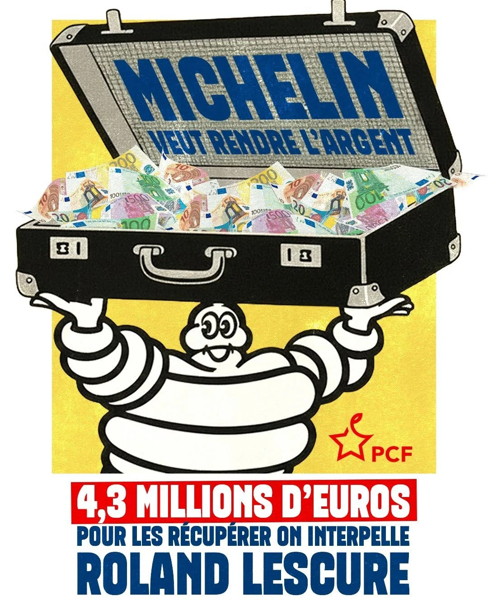

Déclaration nationale
Michelin. Le PCF demandait la restitution des 4,3 millions d’euros d’aides publiques
Date de mise à jour indiquée par Facebook · 26 novembre 2025
Repères éditoriaux
Le PCF a interpellé le ministre de l’Économie sur le remboursement de 4,3 millions d’euros de crédit d’impôt perçus par Michelin. Les auditions du Sénat documentent l’utilisation de cette somme pour des équipements dont plusieurs ont été envoyés à l’étranger. Une publication ultérieure revient sur l’annonce du remboursement.
Texte de la publication · PCF national
211 milliards d’euros : aides publiques versées chaque année aux grandes entreprises, sans contrôle.
Dans cet ensemble, 4,3 millions versés à Michelin pour des machines destinées à La Roche-sur-Yon, jamais arrivées en France car envoyées à l’étranger.
Grâce au sénateur Fabien Gay, l’affaire est révélée.
Le PDG reconnaît les faits et se dit prêt à rembourser. Mais aucune loi ne permet aujourd’hui à Michelin de rendre cet argent.
Alors qu’on récupère les aides des plus modestes, comment accepter qu’un grand groupe échappe à tout remboursement ?
Le remboursement des aides détournées est une question de justice.
Cette affaire peut devenir un précédent pour contrôler l’argent public.
Nous interpellons Roland Lescure : créerez-vous un cadre légal pour récupérer ces fonds ?
La France a besoin de transparence et de justice dans l’usage des fonds publics. Aidez nous ! Interpellez le ministre (lien en commentaires) !

Sources
PCF national · publication relayée par le PCF 79 · bibliothèque Facebook · AR-0002-FB-00946
À lire aussi · Michelin rembourse 4,3 millions d’euros. Le PCF demande des comptes sur les aides publiques